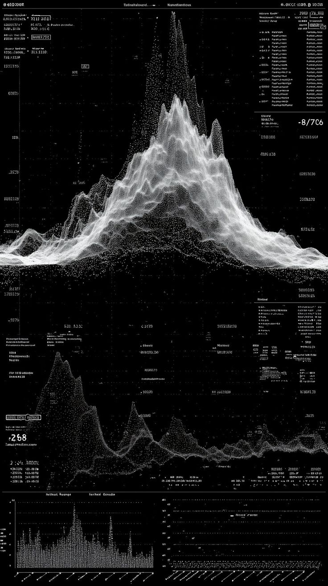

Estratégia e arquitetura de IA
Mapeamento de casos de uso, viabilidade, dados, riscos, integrações e arquitetura técnica para priorizar onde a IA pode gerar valor real.
Discovery · roadmap · arquiteturaProjetamos soluções de IA generativa, machine learning e visão computacional conectadas aos dados, processos, equipamentos e decisões do seu negócio.
O primeiro passo é entender o processo, os dados disponíveis, a criticidade da decisão e o resultado esperado. A partir disso, definimos se a melhor resposta é IA generativa, aprendizado de máquina, visão computacional, automação ou uma arquitetura híbrida.
Esse enquadramento evita provas de conceito desconectadas da operação e cria uma rota objetiva entre oportunidade, protótipo, integração e uso contínuo.
Um escopo modular para começar pelo ponto mais relevante e evoluir conforme o valor é comprovado.
Mapeamento de casos de uso, viabilidade, dados, riscos, integrações e arquitetura técnica para priorizar onde a IA pode gerar valor real.
Discovery · roadmap · arquiteturaAssistentes corporativos conectados a documentos e bases privadas, com busca semântica, contexto recuperado, referências e controle de acesso.
Conhecimento · atendimento · copilotosFluxos capazes de interpretar solicitações, consultar fontes, acionar APIs e executar etapas com regras, permissões e aprovação humana.
Orquestração · ferramentas · workflowsModelos para classificação, previsão, detecção de anomalias, recomendação e priorização a partir de dados históricos e sinais operacionais.
Forecasting · scoring · anomaliasDetecção, classificação, segmentação e rastreamento em imagens ou vídeo, com possibilidade de inferência próxima a câmeras, sensores e equipamentos.
Inspeção · percepção · tempo realVersionamento, implantação, testes, monitoramento, rastreabilidade e controles para manter modelos e aplicações de IA confiáveis ao longo do tempo.
Operação · observabilidade · segurançaCom RAG, a aplicação recupera informações autorizadas antes de gerar a resposta. Isso permite criar experiências úteis sobre manuais, normas, contratos, históricos, bases técnicas e sistemas internos — com o contexto e a rastreabilidade necessários para uso profissional.
A escolha entre modelos comerciais, privados ou abertos é feita conforme requisitos de qualidade, latência, custo, privacidade e implantação.

Quando há dados consistentes e uma decisão recorrente, modelos de machine learning podem estimar tendências, identificar desvios e ajudar equipes a agir antes que um evento se torne um problema.
Desenvolvemos pipelines de visão computacional para extrair eventos, medidas e estados de imagens ou vídeo. A solução pode operar em nuvem, infraestrutura local ou na borda, próxima ao sensor, conforme os requisitos de latência, conectividade e privacidade.
Os casos abaixo podem ser combinados em uma mesma arquitetura, do ambiente corporativo ao sistema embarcado.
Respostas contextualizadas sobre acervos, manuais, procedimentos e registros autorizados.
Extração de campos, classificação, comparação, síntese e encaminhamento de documentos.
Automação de tarefas com consultas, regras, integrações e pontos explícitos de aprovação.
Modelos para reconhecer padrões, anomalias e tendências em dados técnicos e operacionais.
Detecção e classificação de condições em imagens, vídeo e linhas de verificação.
Inferência integrada a câmeras, sensores e plataformas com restrições de tempo e conectividade.
Cada etapa possui uma decisão clara de continuidade. O objetivo é reduzir incerteza antes de ampliar dados, integrações e infraestrutura.
Problema, usuários, decisão, fontes de dados, riscos, restrições e critérios de sucesso.
Protótipo ou prova de valor com cenário controlado, baseline e avaliação objetiva.
Integrações, segurança, experiência de uso, testes, implantação e observabilidade.
Monitoramento, feedback, revisão de dados, avaliação contínua e novas capacidades.
Privacidade, segurança, explicabilidade e responsabilidade são tratadas desde o desenho da solução, de acordo com o risco e a criticidade de cada uso.
Definição de fontes autorizadas, segregação, permissões, retenção e proteção de informações.
Conjuntos de teste, critérios de qualidade, limites de uso e tratamento de respostas inadequadas.
Pontos de revisão e aprovação proporcionais ao impacto da decisão ou ação automatizada.
Logs, versões, evidências e monitoramento para compreender como o sistema se comporta.
Prioridades, requisitos, riscos, integrações e plano de implantação.
Interface e serviço integrados ao fluxo definido no escopo.
Preparação, avaliação, versionamento e execução reprodutível.
Critérios, métricas, controles e orientação para continuidade.